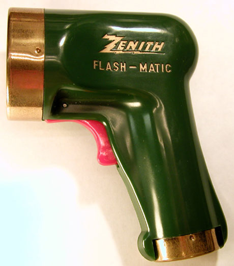
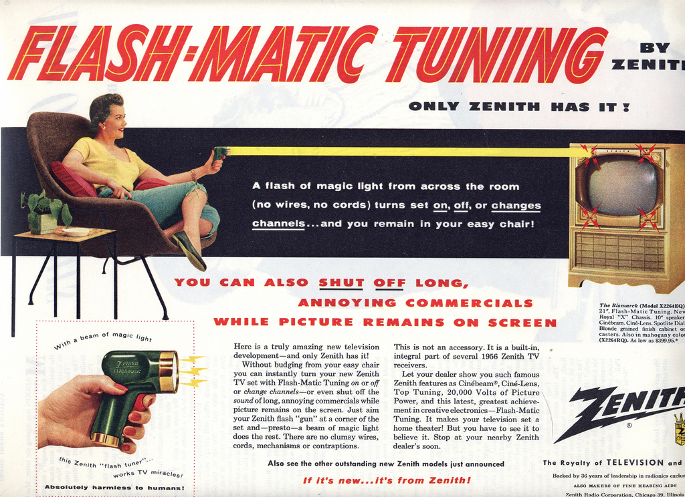

Consumer Electronics

Developed by Eugene Polley in 1955, the 'Zenith Flash-Matic' was a significant innovation during its time and was the first prototype of a device that is today extremely commonplace. What did the Flash-Matic introduce to the world?
